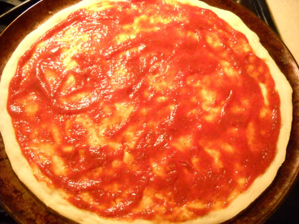
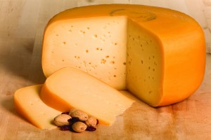
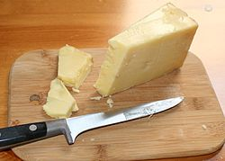
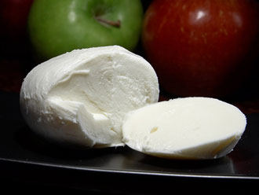
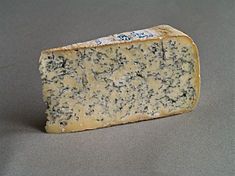
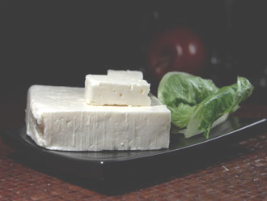
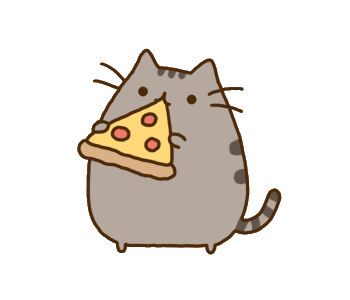

Ingredients:
Plain no extra charge
Just a plain old pizza. I'd suggest getting some cheese as you are looking at Victoria's Cheesiest Pizza
Gouda + $2
Gouda, or "How-da" as the locals say, is a Dutch cheese named after the city of Gouda in the Netherlands. If truth be told, it is one of the most popular cheeses in the world, accounting for 50 to 60 percent of the world's cheese consumption. It is a semi-hard cheese celebrated for its rich, unique flavour and smooth texture.
Cheddar + $3
Cheddar cheese, the most widely purchased and eaten cheese in the world is always made from cow's milk. It is a hard and natural cheese that has a slightly crumbly texture if properly cured and if it is too young, the texture is smooth. It gets a sharper taste as it matures, over a period of time between 9 to 24 months.
Mozzarella + $1
Mozzarella cheese is a sliceable curd cheese originating in Italy. Traditional Mozzarella cheese is made from milk of water buffalos herded in very few countries such as Italy and Bulgaria. As a result, most of the Mozzarella cheeses available now are made from cow's milk.
Blue Cheese + $4
Blue Vein cheeses also called Blue cheese is a generic term used to describe cheese produced with cow's milk, sheep's milk, or goat's milk and ripened with cultures of the mold Penicillium. The final product is characterized by green, grey, blue or black veins or spots of mold throughout the body. These veins are created during the production stage when cheese is 'spiked' with stainless steel rods to let oxygen circulate and encourage the growth of the mold. This process also softens the texture and develops the distinctive blue flavour.
Feta Cheese + $2
Feta is a pickled curd cheese that has a salty and tangy taste enhanced by the brine solution.

Total Price
Please select toppings
